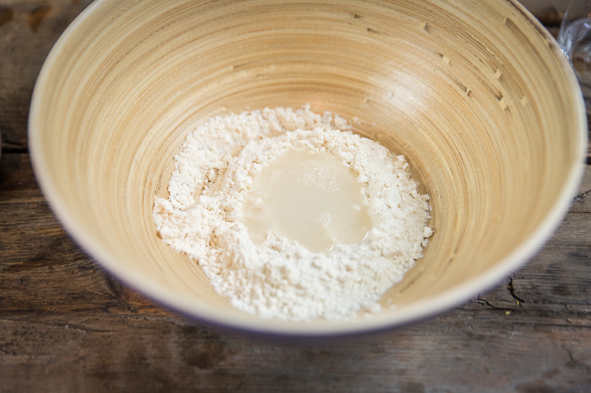
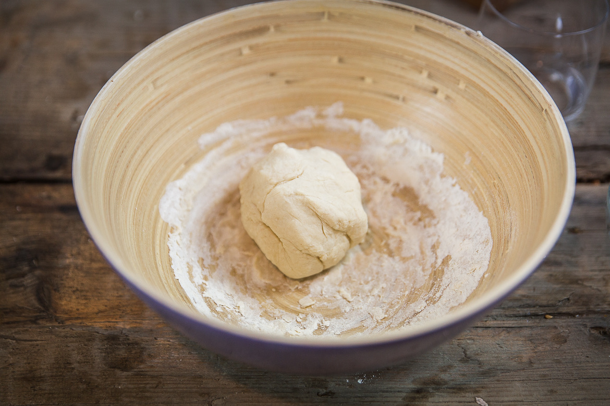
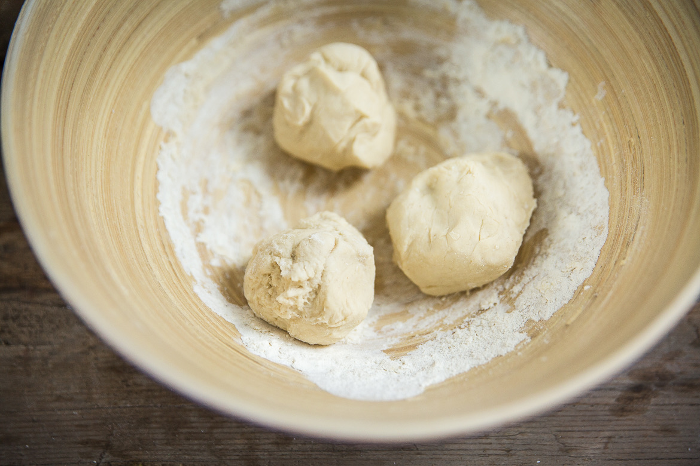
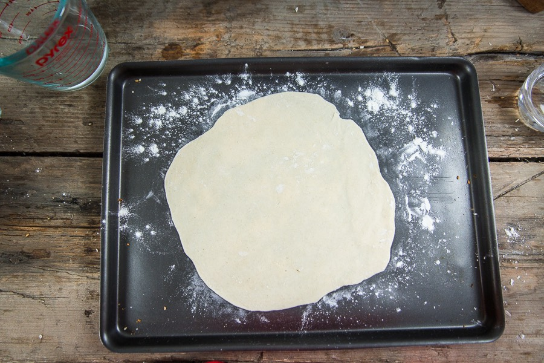

Pain Azyme

Aujourd’hui je vous retrouve avec une recette toute simple à laquelle on ne pense pas toujours, celle du pain Azyme!Si je vous donne cette recette aujourd’hui c’est parce que j’ai eu besoin de faire mon pain azyme pour la prochaine recette qui va suivre sur le blog (il s’agit de ma recette favorite depuis que je suis toute petite, celle du gaspacho manchego!!) alors je me suis dit que ça pouvait aussi vous intéresser d’avoir la recette de ce pain. Je ne vais pas vous expliquer ce qu’est le gaspacho manchego car vous le saurez très très vite (d’ici deux jours pas plus^^) et je vais plutôt ma contenter de vous parler de ce qu’est le pain azyme pour ceux qui ne connaissent pas. A l’origine, il s’agit d’un pain préparé par les juifs qui selon la tradition, préparent le pain azyme pendant la Pâques Juives (concernant le pourquoi du comment je ne suis pas au courant, je ne connais pas bien les traditions juives, mais si quelqu’un sait pourquoi et d’où vient cette tradition, qu’il n’hésite pas!). L’église catholique peut aussi utiliser le pain azyme en guise « d’hostie » pendant la consécration de l’eucharistie mais la plupart utilisent du pain levé. Le pain azyme est composé de farine (très souvent complète ou d’un mélange de farine blanche et de farine complète), d’eau et d’un peu de sel (du moins c’est comme ça que ma grand-mère le prépare!). Sa préparation doit se faire en 18 minutes maximum (de la préparation à la cuisson) pour éviter qu’aucun levain ne puisse se développer. Vous l’aurez compris, (et vu sur les photos), le pain azyme ne contient aucune levure et c’est donc pour ça que c’est un pain très très plat. Certains l’utilisent comme un coupe-faim moi je m’en sers principalement dans un plat mais il m’arrivent d’un faire avec des épices dans la pâte et de manger ça tout seul (c’est un peu addictif^^). Je vous laisse découvrir cette recette (facile et rapide^^) pour ceux qui seraient tentés de se lancer dans la confection du pain azyme! Je vous souhaite de passer une belle journée et je vous dis à très vite avec une toute nouvelle recette 🙂
Enregistrer
Enregistrer
Enregistrer
Enregistrer
Ingrédients
- Farine (celle de votre choix ou un mix farine blanche/farine complète) - 100g
- Eau - 50 ml (environ) - dépendra de votre farine
- Sel - 1/2 càc
Instructions
- Préchauffer le four à 200°C
- Dans un grand saladier, mélangez la farine et le sel puis faites un puits
- Ajouter l'eau progressivement
- Comme indiqué dans la liste des ingrédients il se peut que vous ayez besoin de plus (ou moins) d'eau selon la farine choisie
- Continuer d'ajouter de l'eau jusqu'à obtenir une boule de pâte homogène et qui ne colle pas (si elle colle c'est que vous avez ajouté trop d'eau, à ce moment-là ajoutez un peu plus de farine)
- Diviser la pâte en pâtons (ici en trois)
- Étaler finement la pâte sur elle-même en lui donnant la forme d'un cercle Pour leur donner une forme parfaitement ronde, utilisez un emporte-pièce!
- Piquer l'ensemble des galettes à l'aide d'une fourchette
- Enfourner sur une plaque à pâtisserie recouverte de papier sulfurisé environ 10-15 minutes à 200°C (il faut sortir les galettes quand des petites tâches marrons apparaissent)




Les tips de la communauté
Recette simple et appréciée pour sa facilité et son côté nostalgique. Les commentaires célèbrent la découverte/redécouverte d'un pain traditionnel, sans critique technique notable.
Astuces
- Correction importante: utiliser 50 ml d'eau (non 500 ml)
- Pain rapide et facile à réaliser
- Peut être cuit au feu de bois pour un résultat exceptionnel
Ajustements signalés
- Quantité eau: 50 ml (une recette contenait 500 ml par erreur, corrigée)
- Pâte ne nécessite pas de temps de repos